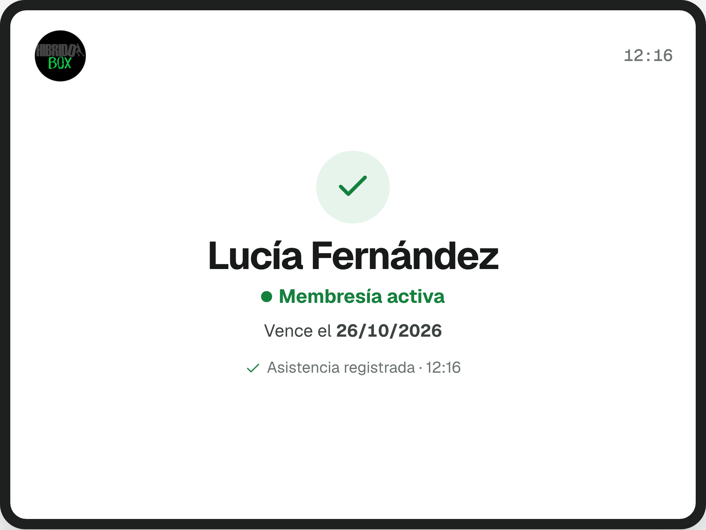
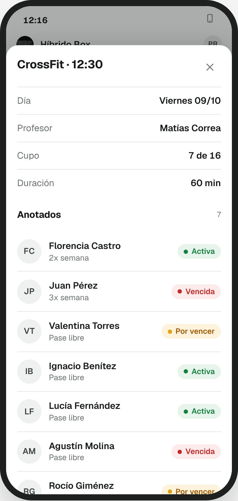
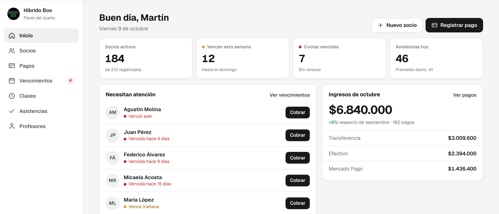

CrossFit Control · Sistema de gestión instalado y funcionando
| Destinatario | Guido, dueño del box |
| Preparado por | Flownix |
| Fecha de emisión | 9 de octubre de 2026 |
| Vigencia | 15 días corridos, hasta el 24 de octubre de 2026 |
La asistencia y las cuotas se registran en un cuaderno. Esto genera tres problemas:
CrossFit Control reemplaza el cuaderno por un sistema web con una tablet en la recepción:
El resultado esperado es detectar los atrasos a tiempo, reducir las cuotas impagas y tener la información del box siempre disponible.
Flownix deja funcionando un sistema completo para registrar socios, controlar cuotas y supervisar asistencias desde el celular, con la tablet instalada en la recepción y sin que los alumnos tengan que usar aplicaciones.
Capturas del prototipo presentado, con datos de ejemplo.

1. Recepción. El alumno ingresa su DNI y presiona Enter. La pantalla muestra su nombre, el estado de la cuota y la fecha de vencimiento, y confirma la asistencia. A los pocos segundos queda lista para el siguiente alumno.
| Activa | Cuota al día. |
| Por vencer | Vence en 7 días o menos. |
| Vencida | Se muestra el aviso. El ingreso queda a criterio del box. |

2. Profesor. Desde cualquier celular: alumnos de la clase, total de asistentes y estado de la membresía de cada uno.

3. Dueño. Socios activos, vencimientos de la semana, cuotas vencidas, asistencias del día e ingresos del mes. La información financiera solo es visible para el dueño.
| Módulo | Descripción |
|---|---|
| Gestión de socios | Altas y edición de socios, con DNI y datos de contacto. |
| Cuotas y pagos | Registro de pagos con importe y fecha. Cálculo automático de vencimientos. |
| Asistencia por DNI | Registro de la llegada en la tablet de la recepción. |
| Clases y turnos | Cada asistencia se asigna al horario de clase correspondiente. |
| Control desde el celular | Vistas para el dueño y para los profesores. |
| WhatsApp directo | Recordatorios de vencimiento manuales, en un toque. |
Además, el sistema incluye:
Desde el celular, los entrenadores ven qué socios tienen la cuota por vencer o vencida. Con un botón se abre WhatsApp con un mensaje de recordatorio ya preparado, que el entrenador puede revisar, editar y enviar.
Ejemplo de mensaje
El envío es manual: el sistema no envía mensajes automáticos, no requiere una cuenta de WhatsApp Business ni genera cargos por mensaje. El envío depende de que WhatsApp esté disponible en el dispositivo del usuario.
| Usuario | Acceso |
|---|---|
| Dueño | Acceso completo: socios, pagos, clases, asistencias, ingresos y reportes financieros. |
| Profesores (4) | Asistencia de sus clases, estado de cuotas y recordatorios por WhatsApp. El alta de socios y el registro de pagos se habilitan según lo que defina el dueño. No acceden a ingresos ni reportes financieros. |
| Alumnos | Ingreso del DNI en la tablet de la recepción. |
El sistema contempla una única membresía, sin límite de días de entrenamiento. No incluye reservas ni control de cupos.
El plazo comienza cuando se cumplen tres condiciones: recepción del anticipo, confirmación de los requisitos funcionales y disponibilidad de la información necesaria para configurar el sistema.
| Etapa | Actividades |
|---|---|
| 1. Definición y configuración | Datos de socios, permisos, reglas de membresía y horarios de clase. |
| 2. Desarrollo y pruebas | Pantallas, pagos, asistencias y controles. |
| 3. Instalación y prueba piloto | Configuración de la tablet y el teclado numérico. Prueba con alumnos reales. |
| 4. Entrega y puesta en marcha | Validación de las funcionalidades y explicación de uso. |
Flownix incluye una garantía de 30 días corridos desde la puesta en marcha. Durante ese período se corrigen sin costo los errores atribuibles al desarrollo o a la configuración inicial que impidan el funcionamiento correcto de las funcionalidades contratadas.
| Incluye | Detalle |
|---|---|
| Funcionamiento técnico | Alojamiento de la aplicación y la base de datos, mantenimiento de la infraestructura, copias de respaldo y verificación del servicio. |
| Corrección de errores | Solución de fallas del software en los módulos contratados. |
| Asistencia técnica remota | Consultas de uso, incidencias y problemas de configuración. |
| Ajustes menores | Hasta 60 minutos por mes de pequeñas modificaciones sobre funcionalidades existentes. No acumulables. |
Horario de soporte
La asistencia técnica se brinda de lunes a viernes, en días hábiles, por WhatsApp o correo electrónico, con una primera respuesta dentro de los dos días hábiles. Las incidencias que impidan usar las funciones principales tienen tratamiento prioritario. El tiempo de resolución depende de la complejidad del problema.
Registro de las ventas de artículos del box, como remeras y calleras, con historial de operaciones y consulta desde el sistema. No incluye comercio electrónico ni administración de inventario.
| Etapa | Porcentaje | Importe |
|---|---|---|
| Anticipo, al iniciar | 40% | USD 480 |
| Sistema listo para revisión | 30% | USD 360 |
| Instalación y entrega | 30% | USD 360 |
| Total | 100% | USD 1.200 |
Un cambio funcional pedido por el cliente se cotiza aparte aunque demande menos de una hora. El límite mensual de tiempo no convierte cualquier pedido en ajuste menor.
| Se considera ajuste menor | No se considera ajuste menor |
|---|---|
| Cambiar etiquetas o textos de botones | Crear una pantalla nueva |
| Reordenar campos existentes | Incorporar nuevos formularios |
| Ajustar colores o detalles visuales puntuales | Rediseñar la interfaz |
| Modificar el mensaje predeterminado de WhatsApp | Automatizar el envío de WhatsApp |
| Modificar reglas configurables ya previstas | Crear una nueva modalidad de membresía |
| Pequeñas correcciones en filtros existentes | Desarrollar informes nuevos |
| Ajustar parámetros de horarios existentes | Desarrollar un sistema de reservas |
La corrección de errores del software no consume los 60 minutos mensuales. Las configuraciones que el dueño puede hacer desde el sistema tampoco, salvo que requiera asistencia.
Quedan fuera del mantenimiento: funcionalidades o módulos nuevos; rediseños o cambios sustanciales de funcionamiento; integraciones con plataformas no contratadas; visitas presenciales, reinstalaciones o reemplazo de hardware; reparación de la tablet, el teclado o sus accesorios; problemas de red, Wi‑Fi, electricidad o internet del establecimiento; cargas masivas de datos o reconstrucción extensa de información; costos de terceros, licencias y servicios no contemplados; y modificaciones que superen el límite mensual de ajustes menores.
El software y su código fuente son propiedad de Flownix. La contratación no incluye la cesión del código ni exclusividad comercial.